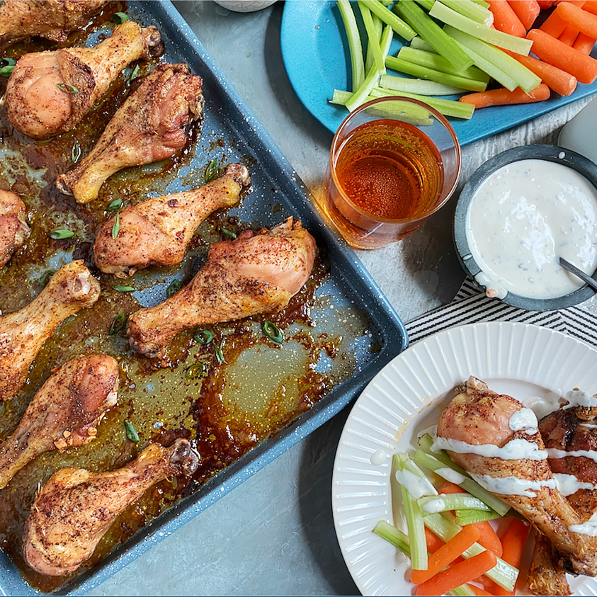

Baked Chicken Wings

- Prep: 10 mins
- Cook: 1 hour
- Total: 1hr 10min
- Servings: 2
- Yield: 10 wings
Ingredients
- 3 tablespoons olive oil
- 3 cloves garlic, pressed
- 2 teaspoons chili powder
- 1 teaspoon garlic powder
- salt and ground black pepper to taste
- 10 chicken wings
Directions
- Preheat the oven to 375 degrees F (190 degrees C).
- Combine the olive oil, garlic, chili powder, garlic powder, salt, and pepper in a large, resealable bag; seal and shake to combine. Add the chicken wings; reseal and shake to coat. Arrange the chicken wings on a baking sheet.
- Cook the wings in the preheated oven 1 hour, or until crisp and cooked through.
Nutrition Facts
Per Serving: 532 calories; protein 31.7g; carbohydrates 3.9g; fat 43.1g; cholesterol 96.6mg; sodium 122.6mg.